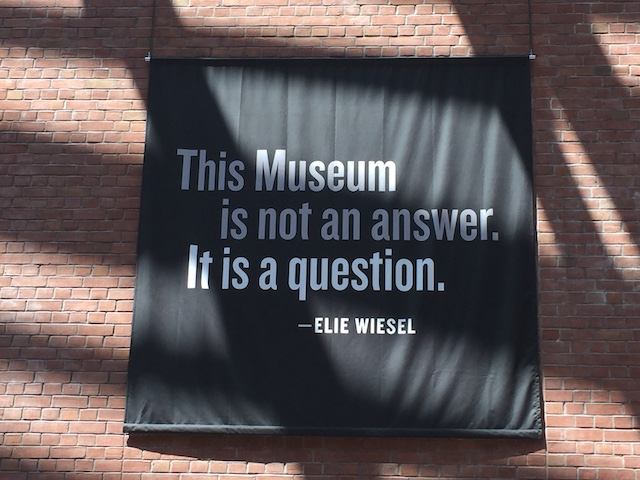

| |
Mid-Atlantic Trip 2019
Washington D.C Six Flags America Pigeon Forge Dollywood Carowinds Busch Gardens Williamsberg Kings Dominion
All right. Time for another Incrediblecoasters Trip. Now, this is a bit of a smaller trip than the stuff that we did last year. Yeah, there's not gonna be nearly as much travel this year as there was last year. This is the only trip we did this year. Now this trip came about as....this was the last part of the U.S I needed to do. I was tired of saying "I've been all over the U.S, done half of Western Europe, and did Japan. I've been to a lot of places" "What about the Virginia parks?" "F*CK YOU!!!!". Yeah. I had to fix that. And that's what this trip is for. Visit all those parks, get back to a couple parks I've visited before that both had a big RMC that was closed when I first visited, as well as the other opening a big new coaster for 2019. Hit that. Also, there are a bit more non-coaster stuff on this trip and normal sight-seeing since I'm traveling with a non-coaster-enthusiast, and we have ourselves a really fun trip. Ooh. This trip has us flying out of Ontario Airport instead of LAX. That's different (New Airport Credit!).
OK. Time to head on our official flight of the year.
All right. We officially have our rental car. So when I picked a car to rent, I just tried to go for the cheapest one because damn it, this is another one of those half-assed on a shoestring budget trips. I forgot what I initially ordered, but when I got here, they just allowed me to choose a car (they offered a big SUV, and considering that A: That's a gas guzzler and we're gonna be driving A LOT B: We're two dudes who packed light enough to avoid the carry on fees. So yeah. Not necesarry), and I just chose a Cadillac since those are apparently nice. DAMN!!! I know people compliment my car a lot and it's the nicest out of all my friends cars (for now), but this is MUCH better. I know it's standard in all new cars, but having a backup camera makes things so much better. Also, I love Onstar. Yeah, it was a little weird having the seat up that high, but you got used to it. I know when I eventually do get a new car, it's guaranteed to be all electric with a range big enough to get me from LA to San Francisco on a single charge (likely a Tesla). But I'd be lying if I didn't say that I really enjoyed driving a Cadillac.
All right. We just got off a flight across the country, dealt with the pain in the ass of getting a rental car, and then had a 45 minute drive to get here (Thanks for being so far out of the way Dulles). But at least we're at our hotel and can relax. Right? *evil laughter*
F*CK THE RED CARPET INN!!!! NO SERIOUSLY!!! F*CK THIS SH*TTY HOTEL!!! F*CK THE ENTIRE SH*TTY CHAIN!!!
Warning: A VERY long Incrediblecoasters Rant is down ahead. I know I've posted many rants on this site before, but honestly, with the exception of my Dueling Dragons review, this might be the 2nd longest rant I've done. Yeah. I have A LOT to say about this place.
So, to explain how this is not only the worst hotel I've stayed at, but the worst business I've had ANY interaction with. Yes, if you rank all companies I've ever had to personally deal with and do ANY sort of transaction with, Red Carpet Inn is unquestionably the worst one of all. Yeah. That bad. But anyways, let's go over the story. Cause there's a lot to cover in this rant/essay.
So I'm booking all the hotels about 5 days out because....again. This trip was half-assed and I'm just looking for cheap sh*tty motels. I don't need anything special. I don't even need complementary breakfast. Just give me a bed, a toilet, and a shower. That's it. This place is cheap. The reviews aren't that great, but I think nothing of it. F*ck it! I have no standards. So I book the hotel (To be fair, another hotel on this trip had worse reviews, and I have no complaints about that hotel at all).
About 36 hours later, I was going through more details about the trip, double checking everything, when I come across my receipt for the Red Carpet Inn. I look at it, and I notice this in the email "Check in closes at Midnight. If you want to arrange a late check-in, please call to arrange that". *groan* Our flight lands about 10:15 PM, add in the time it takes to get the rental car, and the drive to get there, it looks like we'd arrive at around 11:45ish. But any small delay would push us past midnight. So to be better safe than sorry, I call to arrange that late check in.
So I call the hotel, I explain the situation, and I am just told "Oh no! Check out closes at 11:30!". WHAT!!? THE EMAIL LITERALLY SAYS MIDNIGHT!! I respond with "What!? But your email specifically says midnight and that....", the manager cuts me off and says "No! Email lie! We close at 11:30!". I have no idea what to say, this sh*tty hotel literally just lied to me. Trying to come up with some sort of response when *click* This bastard just hangs up on me! F*CK YOU DUDE!!! Check to see if I can cancel and get a refund. Nope. GAH!!! >=(
The next day, it's the day before the trip, and I'm freaking out over this god damn sh*tty motel! Thank god I had being at Knotts that day as a distraction. Anyways, later that night, we're staying at a friends place because he's pretty close to the airport and it's cheaper that way. I tell him the entire story, and he tells me "Dude! That is false advertising! They lied to you! Call up Orbitz and have them get you your money back!" I'm totally down with that! Get my money back and find another cheapass place to stay tomorrow night. I call Orbitz, explain to them, and they say "OK. We understand your situation. Let us call the hotel and work this out". They try 5 DIFFERENT TIMES!!! Was never able to get a hold of them once! WHAT!!!? It's not even that late on the East Coast! WHAT THE F*CK!!!? Orbitz then says "It's pointless to keep trying now. We will try again in the morning, and a representative will get in touch with you. Thank you for doing business with Orbitz". Ugh. That didn't help at all. And considering how I'm flying out tomorrow, that representative would have a hard time getting a hold of me (They never did. Hooray for beauracracy).
So we fly out, get the rental car, which was a pain in the ass and definetly took longer than expected and we arrive around 12:30ish. Not sure exactly what was gonna happen. I kept saying to Jason "Worst case scenario, we get stuck sleeping in the rental car". And....yeah. That's exactly what happened. Worst case scenario happened. I know I've slept in the car before (having flashbacks to the Glass Beach Road Trip lol). It's doable. But it's not fun. On top of that, this is...a sketchy area. Hell, I think I literally saw a drug transaction occur in the parking lot. Really glad that those guys that looked at us just assumed that we were white trash and not undercover cops. Who knows. Maybe I'm being paranoid and unfair to those random people in the parking lot. Doesn't matter now. While in the car, I get a standard email from Orbitz, saying "Thank you for staying at the Red Carpet Inn. How was your stay? Please rate your visit!". Now I normally don't do this, but....I'm sleeping in a rental car in a parking lot! F*CK THIS PLACE!!!
Later in the morning, we finally see someone come out who introduces himself, and says "Yo! Did you sleep here overnight!?" We explain to this guy our story. He asks if we're from around here, and after we tell him we're from out of town, he assumes we're from Florida (Nope. California. That's a new place to add to the list of places people thought I was from). This dude then basically explains that he's been living here because....I think he mentioned going through a bad divorce and his ex-wife has the house and it's this place or homelessness. Oh god! The people staying here are in THAT situation. I'm sorry. Mainly because that situation just plain sucks. But also....I'd probably go insane if I was forced to live HERE. He mentions that the guy who runs the place (It's all one dude) left early last night and that he's waiting for him to come back so he can give him more money so he can stay there, and wishes us good luck on our trip.
So after that guy pays to stay there longer (I really hope you have an apartment now dude. Or at the very least, are in a better hotel at the bare minimum), I finally meet with the owner. It's the exact same guy I spoke with on the phone who said "No! Our email lied!" and hung up on me. The ONE upside is that despite asking for your credit card info, you have to swipe the card here, and the guy just mindlessly charges me for only one night. So at least I only have to spend the money for one night here. That's an upside. We put our stuff away, and get ready to go out and explore Washington D.C (what the rest of this update is about).
If this is where the story ended, I would've been angry, but I wouldn't have thought much of it. If this was all there was to the story, I wouldn't be writing this essay and telling the story. OK. I might've given a soundbite, shown the middle finger photo and said "THE RED CARPET INN SUCKS!!! THEIR EMAIL LIED AND WE HAD TO SLEEP IN THE CAR BECAUSE OF IT!!! F*CK THIS PLACE!!!" and left it that. I would've been mad. But I wouldn't have this intense seething anger and hatred I have for this place. So yeah. Let's continue.
The next morning, we're getting ready to check out and head over to Six Flags America. We're literally 5 minutes away from officially leaving, when I hear a knock on our door. What!? Who the hell wants to speak to us at this time!? I open the door, and the owner is standing at our door. Uh....WHAT!? "Good morning sir. How are you?". "Uh....fine." What the hell is this guy doing here? He then basically says "Good. Listen, we just saw the review that you left for us. It was a bad review. We don't like it. We don't think it was fair. Please take it down". I just stand there, jaw on the floor. ARE YOU SERIOUS!!!? ARE YOU F*CKING SERIOUS!!? YOU'RE TELLING ME TO TAKE DOWN THE REVIEW I LEFT (which BTW, isn't even there. I can't even find it. It apparently got buried under all the crap from Orbitz) BECAUSE YOU DON'T LIKE IT!!!? I'm literally about to leave and never come back to this sh*thole again in 5 minutes, so I just lie and say "Uh....sure". I quickly grab all of our stuff, put our bags in the car, check out, and are now officially off to Six Flags America.
WOW!!! I am FUMING, and REALLY angry. OK, I get over it and have a fun time at Six Flags America (the SFA update will cover that). But that behavior, asking a customer to take down a bad review because you don't like it, COMPLETELY INNAPROPRIATE!!! Apparently, this is a big enough problem that Yelp literally has a page saying "Don't take down reviews if a business is bribing or threatening you to remove the review because we want accurate reviews, blah blah blah". But yeah. I officially have a grudge. I officially am going to write this essay, but amazingly, this story (and this hotel) gets EVEN WORSE!!!
So, apparently, on the day I was at Dollywood, they sent a TERRIBLE passive-agressive email. I'm so happy that this missed my radar that day and I just mindlessly marked it as read because 90% of my email is spam and garbage that I just ignore. I didn't even know about this until I was digging through old emails, looking for the receipt for the rental car, when I notice an email saying "The Red Carpet Inn has sent you a message". GOD F*CKING DAMN IT!!! And....WOW. This email is TERRIBLE. It made me MAD. VERY MAD!!! F*CK YOU!!! F*CK YOU RED CARPET INN!!!! It was a really long email that pretty much boils down to "Your review is bullsh*t, we're right, you're wrong. #SorryNotSorry". That's the gist of this email, but it is so terrible that I want to go and respond to every terrible point you made because you're THAT full of sh*t.
"We have to close early because that's how we keep our prices low"
That's cute. I spent 3 nights at Grids in Tokyo and 4 nights at the Peace House Abeno in Osaka for the exact same price. But you wanna argue that that's a hostel and doesn't count? Fine. We'll just limit ourselves to hotels. Particuarly, hotels on this trip. At the other hotels on this trip, our base camps in Pigeon Forge and Suffolk, I paid approximately the SAME price as what I paid here. Now neither of those places are anything fancy or special. Generic crappy motels. But you know what!? Their emails never lied to me! And on top of that, I checked into both of those hotels later! We arrived in Pigeon Forge at 1:30 AM, and we arrived in Suffolk at 2:00 AM. And at BOTH of these places, we were able to check into our room and go to bed that night! And again, both of these places are in the same price range as yours! But that's far from the most infuriating thing they discussed.
"Why didn't you try calling us?"
Gee. Maybe because when I DID try calling you, all I got was a rude and unhelpful "Oh no! We lied in our email!" and then got hung up on! Maybe THAT has something to do with it! Also, I was essentially out that day, being on planes, going through airport security (More TSA. Joy), dealing with the rental car place, and then driving here (not to mention getting to the airport). Between all that, the only chances I would've had to call you were A: Waiting at my gate to board my plane. B: During my short layover in Austin, TX. And....why should I spend what little time I have during my layover dealing with you when you act like that when I first call you!?
"You never stayed in a room! So how could you say that the staff was rude or the rooms were dirty?"
I said you were rude because when I called you, YOU literally just said in a rude way "Oh no! We lied in our email!" and just hung up on me! Yeah. That's pretty rude! Also....your surrounding area was not very clean. Ghetto parking lot, again, did I mention that I think I saw a drug transaction occur in the parking lot!? Yeah. That's real clean. I remember reading some other person mention that in a review, and I saw that you responded to them saying "How dare you! That person is Bob and he's a real nice guy!" or something like that! I would normally be inclined to believe that, but based on what I experienced, I'm inclined to believe the other critic. Also, I was staying on the property. Was unable to get into a room cause...yeah. Your email f*cking LIED to me. But yeah!
"Our manager waited extra long for you. He waited until 12:15, but you never showed up. And then he had to take an expensive Uber home."
First of all, I don't care about your personal sob story. If the goal of this is to make me feel sorry for you, you're failing misreably. Why would you tell me details about your own personal struggles? Do I tell you if one of my flights got delayed? Do I tell you that I was stuck in a lot of traffic? Do I tell you about my standard complaints about TSA? No! Because you don't care about the personal problems of me! And I don't care about the personal problems of you! I know you're trying to say "I waited for you!" Hmm, getting flashbacks to that one guy we spoke to in the morning who mentioned that YOU left early. But who knows. Maybe he just saw you leave and didn't see you come back.
"He tried calling you multiple times"
YOU F*CKING LIAR!!! F*CK YOU!!! LIAR!!!! I don't know if you know this, but Caller ID exists. And whenever anyone tries to call you on your cell phone, the phone tracks it and keeps a history of everyone who ever calls or attempts to call you. And NOBODY tried to call me that day!!! I know that the phone was in airplane mode during both flights. But even so....you can leave voicemails. You can still leave a message! And throughout the day, there was NO call! YOU F*CKING LIAR!!!!
This has to be the WORST non-apology ever! This isn't just "I'm sorry you felt this way" or "If I offended you, I'm sorry". And yeah. Those are terrible too, but this isn't even that! This is "We're sorry that you're wrong! We're right! F*ck you! Sorry, but not sorry!". All this is is (I know this word is overused nowadays and is just another buzzword. But....this is just a textbook definition) gaslighting me and saying that you're sorry, and then justifying all your sh*tty decisions, all while completely lying to me (I stayed late for you and tried calling you!) and tried pathetically at making me feel sorry for you (I had to call an Uber home!). And then you try to intimidate me into taking down a bad review (THAT YOU CAN'T EVEN SEE ANYMORE!!!)!? F*CK YOU!!!! I know I'm primarily a coaster critic, but....I just had to leave a 2nd bad review on Google and left a much shorter G-rated version of this essay (People don't want to read an essay when looking for reviews, but the point is the same).
I know I'm primarily a coaster critic and a theme park critic, and while this isn't my job (even if apparently, some people think it is. I F*CKING WISH!!!). My reviews do pop up, I know with the exception of Disney and Universal Parks, most other parks, if you google....say....California's Great America Reviews, my review is literally the 4th result that comes up! First TripAdvisor, then Yelp, then the reviews from US News, and then me! So yeah. Parks that scower the internet for reviews, unless they're Disney or Universal, have probably stumbled across my reviews. And NEVER has a park ever contacted me telling me to take down my review (One did politely inform me of a minor factual error, which...hey. I'm willing to correct when making factual mistakes). Let's go with the harshest review I left on Incrediblecoasters. My Mt. Olympus review. Unquestionably the harshest and most critical review I've done of any theme park. Rereading it, it's a lot meaner and harsher than I remembered. Did Mt. Olympus ever email me saying "This review is mean! We don't like it! Take it down!?" NO!!! They didn't! If anything, they've actually been improving over the years! Hell, if the reports I've heard from my friend who visited this year are true, then the park actually did it! They actually fixed every single thing that I complained about with the park and it's actually a fun park now! Now this is just one report from a friend. I haven't been to confirm if this is true or not (So, I'm leaving the review as is for now), but if so, then they did EXACTLY what you're supposed to do when you get bad criticism! Actually listen to it, respond to the valid complaints (I know bullsh*t criticism will always exist, and legit criticism can be delivered in a mean way, and I'm guilty of that. But....actually respond to criticism!), and make your company better! I don't have any plans to go back to Mt. Olympus since they haven't added anything new since I last visited, but hey. I do plan on returning to Six Flags Over Texas within the next 5 years (another park that I have criticized heavily and has apparently really improved over the years), and if the reviews are true, I will GLADLY admit that they have improved and acknowledge that they worked hard to improve the park. Gee. Maybe doing that would be smarter than writing passive-agressive non-apologies to those who leave bad reviews. Seriously, I'd be less insulted if you just flipped the bird right to my face.
I know even in your sh*tty awful non-apology, you mentioned NOTHING about your email lying. And I know you're trying to cover that up and pretend that was never the case as you literally went back and edited your details and not only did you change it from "We close at Midnight" to "We close at 11:30", you also added in "You will sleep in your car if you arrive late". Thanks for letting future travelers know in advance that you suck. Oh who am I kidding? The people who stay here are the suckers who have to stay in a motel lest they go homeless. And I know you don't give a f*ck.
And given that the passive agressive non-apology came from a higher up from the Red Carpet Inn Chain, it's not this one specific franchise that's terrible with one terrible douchebag running it, but he's an outlier. No, the entire chain is like that! Or at least this branch in the DC Area is. Who knows. Maybe someone is the manager of a Red Carpet Inn in another city, is appalled by the story, and wants to ensure that they're not like that at all. I appreciate that. But....sorry. I will officially NEVER stay at a Red Carpet Inn EVER again! I'm still amazed that this is a chain! Thank god they are primarily only on the East Coast. If I could give you 0 stars, I would. F*CK YOU!!!
OK. Sorry about that giant rant/essay. Let's get back to having fun and sightseeing. Time for us to explore Washington DC.
All right. So we're visiting D.C, the political capital of America. And as such....political opinions will be expressed in this update. I know I generally try and keep the site mostly about roller coasters, cliff jumping, and having silly fun. This isn't a site meant to discuss serious topics. But I have posted captions that reveal my political leanings in the past, and it's obvious to anyone who knows me in person. But just in case you don't know, you're gonna know crystal clear which direction I lean in this update.
If you don't want to know that and read the site to know more about cool theme parks, experience crazy coasters, or in the non-coaster updates, see pretty photos of cool places, then I'd recommend just viewing the photos and not reading the captions.
Hey, this update contained a giant essay that's basically a middle finger to a sh*tty gaslighting motel chain. If you can read that, the captions shouldn't be a problem.
Hmm. I wonder where we could be heading towards. Gee. If only there was some sort of clue.
Hmm. What is this memorial? I don't think I've ever heard of this one before.
No. This isn't a memorial to the fat bathtub president, William Taft. This is for his son, Robert Taft. A right-wing senator from Ohio for years. Uh....putting aside the fact that he's mostly wrong about everything (I will admit that being anti-war is good if I want to say something nice), is he really important enough to have a freaking monument? You were a senator. There's been lots of other senators. I know historians like you (maybe it was because your Dad was president), but....oh well. Just a small little monument I learned about.
Ooh. That's a really nice water fountain. Honestly, I think that's the nicest water fountain I've seen in America (Weird random list idea).
You know, if I just pretend that this place is only Bernie Sanders (Bernie 2020), Alexandria Ocasio-Cortez, and associated allies, then suddenly, this place isn't so bad. =)
 Checking out the Washington Monument from the Capitol Building.
Checking out the Washington Monument from the Capitol Building.
"Should we hold the obvious and brazen criminal accountable!?"
"I don't know. I know he's been brazenly breaking the law and being a hellish menace on not only the country, but the entire world for years, but we've been turning a blind eye because we want to get along with the Saturday Morning Cartoon Villians even though they constantly f*ck everyone over and spit in our eye. We don't want to be impolite. But these specific recent crimes are particuarly outrageous. We're going to officially look into it and might possibly take action later!"
Is this fountain also a water fountain? If not, then I'm not interested.
Yeah. I agree that we as tourists should respect the National Monuments. But so should you! No more allowing private companies to take them over, and destroy them so they can make short term profits at the long term detriment of everyone else! So don't tell us to respect these national monuments (which just to be clear, you totally should) in one breath and then in the next, green light the destruction of these monuments because you got bribed! >=(
Hey. I have no problem with the duck ramp here. Honestly, the ducks are better than the majority of people working in that building.
 Hmm. I don't remember anything about Ulysses S. Grant riding on a horse behind two lions from history class. When did this occur?
Hmm. I don't remember anything about Ulysses S. Grant riding on a horse behind two lions from history class. When did this occur?
Hey look. Another memorial. This time, for President James Garfield.
Should I have flowers or a flamingo? This is such a tough choice.
OK. So we never planned on visiting the U.S Botanical Gardens. This was just another spontaneous thing we did to cool off.
Not only was this place great for the air conditioning, but it was just a lot of fun exploring the gardens and learning about the different shrubbery.
Wanna protect the rainforest? Stop endorsing monsters like Bolshitnaro who are destroying it.
More information on the climate we have back home.
Thank you air conditioning. You make the urge to stick my head in the fountain more and more non-existant. =)
Meh. I've seen better flowers in the wild.
Ahh. I could spend all day in here (Damn you D.C sun!).
Be a Supreme Court Justice, get your own public park.
Because after the Civil Rights Era, everything was all better and nothing bad ever happened again! =P
One newspaper showcasing us going to the Moon for the first time isn't enough! Let's show the same article from ALL the different newspapers!
This was another spontaneous visit we did to the National Postal Museum because....that's what you do when visiting D.C. It was surprisingly more interesting than I expected. =)
While this isn't a local D.C only pizza place, this place, &pizza, is a small East Coast only chain, so hey. Might as well check it out.
Far from the best pizza ever (Even if you exclude NYC Pizza and Italian Pizza, it's still far from the best), but it was still pretty good.
Definetly my favorite part of this resteraunt is the weird wacky sodas they have on tap. Like Cereal Milk Cream Soda. I'm not a fan of milk, so a soda based on cereal milk didn't sound like a winner to me. But...it was good. =)
For those of you who enjoy a little assasination with your play, you know which theater to head to. ;)
FUCK YOU!!!! GO THE FUCK AWAY!!! NOW!!!!
I hate this asshole so much that I'm not even gonna use the censors. Hey, makes the "F*CK YOU!!!" more powerful when you only use it uncensored for the strongest of anger (I was so tempted to have the essay earlier uncensored. But...nah. Too long).
Oh, and spoiler alert. We didn't visit the White House on this trip for obvious reasons.
How long until F*ckface and his goons defund the EPA Museum?
Unfortunetly, the Washington Monument is down for repairs.
Not a huge deal, as I have gone up to the top of the Washington Monument on a trip to D.C I did as a kid (A: I keep forgetting how old Incrediblecoasters is and how long I've been running this site. B: Oh god! Looking back at updates from that long ago is so cringy!).
Oh boy. So yeah. We decided to visit the Holocaust Museum on this trip. Because yeah. We tend to do dark tourist sites (Hey, we freaking went to Hiroshima last year). And....yeah. This was brutal.

Judging by how the world has behaved since World War 2, this is not a question that we have really asked. Sure, we pay lip service to it. But let's be real here.
Now this technically wasn't my first time in this museum as....I had visited on that previous DC trip. But....it might as well have been the first time as....I was a stupid teenager goofing off not grasping what happened other than "Duh....Holocaust bad! Back to making a jackass of myself!". Thank god it was excluded from the update! Cause....visiting here is a slap in the face.
So....they don't JUST focus on the Holocaust in the Holocaust Museum. They also recently added a new section detailing all the terrible crimes done by the Syrian Government.
While it's true that Bashir al-Assad is a terrible human being and a menace to his own people, he's not a threat to us, we have no right (both morally and legally) being in Syria offensively (Despite what some liars are claiming, we never left), and....the other side that we fund when we aren't fighting them as well are Jihadists linked to Al-Qaeda. You know, those people that attacked us on 9/11. (Psst. Those "moderate" Syrian Rebels you want to arm, aren't so moderate.)
Paying tribute to my grandpa who fought in World War II.
GAH!!! You make it so tempting to just jump in with how hot it is! Stupid D.C Heat! >=(
I'd say that the geese should just take over D.C. Except....no. Geese are assholes. F*ck geese!
Hmm. So the Washinton Monument is is a big tall pointed tower. What are you trying to say about Washington America? =P
Oh yeah. We're in DC. Gotta do more monuments.
Come here. Sit on my lap and tell me what you want for Christmas.
One last memorial for us to check out.
Don't worry. The Jefferson Memorial dome may be being remodeled, but you can still come inside.
I know I jokingly mentioned in the past that this monument looked Greek. Well....it's actually surprising how much the architecture in DC is inspired not only by Greece, but also Rome and Egypt.
Please forget the fact that I had a slave wife who I repeatedly raped. History doesn't need to know that. ;)
Hmm. Do I wanna shell out the money to ride the carousel in the National Mall? Or should I just literally wait till tomorrow since EVERY park on this trip has a carousel?
Hey look! One of the very few people in this town I respect.
And finally, we end with a cheap dinner at KFC. There are so many better chicken places, but....at least the Sweet Lightning Mountain Dew here is really good.
Six Flags America
Home
|